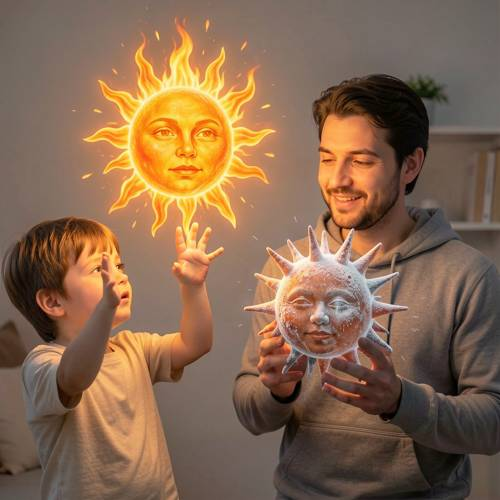
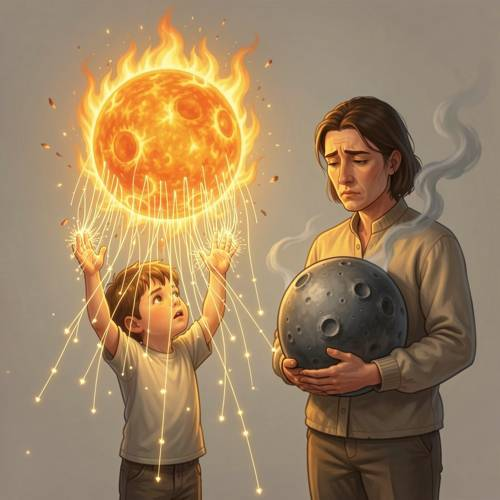
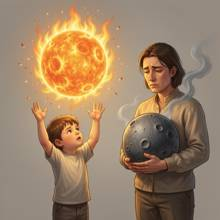
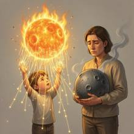

Relationship — A child drew a floating, burning sun in the air with his fingers, whil
A child drew a floating, burning sun in the air with his fingers, while an adult next to him held a cold, extinguished model of the sun.

Direct — one call, no iteration

Continuum — Qwen3.8-27B + FLUX.2-klein-9B
Judge — Direct
PASSRelationship - Comparison — The image visually compares two sun-like objects. One is bright, glowing yellow and orange, and appears to be made of fire, representing a 'burning sun'. The other is a physical object held by an adult, appears solid, has a duller orange color, and is covered in a white, crystalline substance resembling frost, representing a 'cold, extinguished model of the sun'.
FAILAction - Hand (Character/Anthropomorphic) — An adult is depicted holding a sun model with both of his hands, which appear anatomically correct. A child is shown with both hands raised, palms open and fingers spread, gesturing towards the burning sun. However, the child is not shown in the act of drawing the sun with his fingers; the sun is already fully formed.
PASSAction - State — The image depicts a sun-like object that is 'floating' in the air without any visible support. This object is also 'burning', as indicated by its bright glow and surrounding flame-like flares. The second object, a model of a sun, is covered in a white, frost-like texture, which conveys a cold or 'extinguished' state.
FAILCompound - Imagination — The image shows an imaginative element: a burning sun floating inside a room. However, it does not depict the specific imaginative action from the prompt, which is the child 'drawing' this sun into existence with his fingers. The sun is shown as a pre-existing object, and the child is simply gesturing towards it.
Judge — Continuum
PASSRelationship - Comparison — The image displays a stark visual comparison between two celestial objects. One is a large, bright orange sphere engulfed in flames, representing a 'burning sun'. The other, held by an adult, is a smaller, dark grey, cratered sphere with wisps of smoke rising from it, representing a 'cold, extinguished model'. The contrast in color, light, and state is clearly depicted.
PASSAction - Hand (Character/Anthropomorphic) — The image shows a child with both hands raised, palms up, towards the burning sun. Lines of light connect his fingertips to the sun, visually suggesting the action of drawing or creating it with his fingers. The adult next to him is holding the grey sphere with both hands. The hands of both figures are clearly visible and appear anatomically correct.
PASSAction - State — The large, fiery sphere is shown suspended in the air above the child, consistent with 'floating'. It is surrounded by flames and radiates intense light, which depicts the state of 'burning'. The grey sphere held by the adult has wisps of smoke emanating from it, which visually signifies the state of being 'extinguished'.
PASSCompound - Imagination — The scene depicts an event that is impossible in reality. A child is shown seemingly conjuring or manipulating a large, floating, burning sun in mid-air using only his fingers, as indicated by the streams of light connecting his hands to the object. This is a clear representation of an imaginative or magical act.
What the agent did
Thinking
Let me think about this prompt: "A child, using his fingers, is drawing a floating burning sun in the air, while an adult beside him holds a cold extinguished model of the sun." So the scene: a child with fingers raised, drawing/creating a burning sun that floats in the air — probably a glowing, flaming sun appears in the air, connected to the child's fingers, as if being drawn or conjured. The adult beside him is holding a cold, extinguished model of the sun — a gray, dark, lifeless sun model (like a sphere with a surface, dark, dull, with no flames). This is a surreal/whimsical concept art image. Let me generate with flux2-klein. Prompt: "A whimsical surreal scene: a small child standing with both arms raised, fingers spread, drawing a large flaming burning sun that floats in the air above his fingertips, glowing orange fireball with flames and light. Beside the child, a tired-looking adult stands, holding a cold gray extinguished sun model — a dull dark sphere with sun-like surface texture, no light, no flames, lifeless. Soft studio background, magical glowing atmosphere, cinematic lighting, detailed digital painting." Shouldn't add names or backstory. Visual details only. Let me generate at 1024x1024 (default). Then inspect, edit, mark as best. First let's generate.
Step 1 — `generate_image`
{
"model": "flux2-klein",
"prompt": "Surreal whimsical illustration. A small child stands with arms raised, fingers splayed, as if drawing with his fingers: a large floating burning sun hovers in the air right above and between his fingertips, a blazing orange-yellow fireball wrapped in bright flames, radiating warm golden light and embers. Beside the child, an adult stands looking weary, cradling at chest level a cold extinguished model of the sun \u2014 a dull dark gray sphere with sun-like craters and dim surface texture, no glow, no fire, lifeless and cold, a few thin wisps of cold gray smoke. Soft neutral background, magical cinematic lighting, detailed storybook digital painting, warm light from the burning sun contrasting the cold gray model."
}
Result img_0

Thinking
This image is very well done. A child with both hands raised is drawing a burning sun floating in the air, and an adult is holding a cold, lifeless gray sun model with smoke rising from it. This matches the prompt well. Let me check the details: the child's fingers are reaching toward the burning sun — the sun is floating above his hands. The adult is holding a cold, dark gray sun model with craters, and it's cold/smoky. All the elements are there: - A burning sun floating in the air ✓ - The child is drawing it with his fingers (hands raised, reaching) ✓ — it might be a bit better if the sun was closer to the fingertips, but it's floating in the air above his raised hands, so it's fine. - An adult holding a cold, lifeless sun model ✓ - Cold (gray, smoky, no light) ✓ Maybe I could strengthen the "drawing with fingers" aspect — like adding a glowing line/trail from the child's fingers to the sun, as if he's tracing it. That would reinforce the "drawing in the air" feeling. Currently the sun just floats above his palms. Let me try an edit: add a glowing golden light trail / spark line connecting from the child's fingertips to the surface of the sun, making it look like he's drawing it in the air. This is a reasonable improvement. Let me try an edit with flux2-klein. Actually, let me think: is the current image already good enough? The core concept is conveyed. The "drawing with fingers" is a bit vague — the child is just raising his hands toward the floating sun. Adding a glowing trail from his fingers to the sun would make the action of "drawing" clear. This is a meaningful improvement aligned with the prompt. First let me mark img_0 as the best, then make the edit, and if the edit is good, mark that one.
Model
The core concept is well realized — a blazing sun floating in the air above the child's outstretched hands, and a despondent adult cradling a dead gray sun model with smoke rising from it. One weakness: the child's "drawing with his fingers" action is ambiguous — the sun is floating, but there's no visible connection between his fingertips and the sun. I'll mark this as the baseline, then strengthen that connection.
Step 2 — `mark_best`
{
"image": "img_0",
"reason": "All key elements present: burning sun floating in air above child's raised hands, adult holding cold extinguished gray sun model with cold smoke."
}
Thinking
Alright, let's edit it: I'll add a glowing golden light trail/spark connecting the child's fingertips to the burning sun, so that it looks as if he's drawing it in the air.
Step 3 — `edit_image`
{
"image": "img_0",
"model": "flux2-klein",
"prompt": "Add glowing golden light trails: thin luminous spark lines streaming down from the burning sun to the child's fingertips, as if he is drawing the sun in the air with his fingers, small glowing dots of light along the trails from his outstretched fingers to the flaming sphere. Keep everything else exactly the same."
}
Result img_1

Thinking
The edit succeeded. Now the child's fingertips are connected to the burning sun via glowing golden light trails. It clearly looks like he's drawing the sun in the air with his fingers. The adult is still holding the cold, extinguished gray sun model with cold smoke. All the elements are present: - Burning sun floating in the air ✓ - Child drawing it with his fingers (glowing trails from the fingertips) ✓ - Adult holding the cold, extinguished model ✓ - Cold (gray, smoke, no light) ✓ The image looks good. There are some light trails extending below his hands toward the ground, and that's fine — it looks like magical light. The composition is preserved. I think this is better than img_0. Let me mark img_1 as the best and stop. It's in a good state, and no further editing is needed. Just to be safe, let me quickly check the details — like the hands. The child's hands look fine with the glowing light. The adult's hands are cradling the sphere. No problems. I'll mark img_1 as the best and finish.
Model
The edit succeeded beautifully — the glowing golden light trails now clearly connect the child's fingertips to the burning sun, making the "drawing the sun in the air" gesture explicit, and the contrast with the adult's cold, smoky, extinguished sun model has become sharper. Since all the elements of the prompt are present and correct, I'll mark this as the final result.
Step 4 — `mark_best`
{
"image": "img_1",
"reason": "Child visibly drawing the floating burning sun in the air with glowing trails from his fingertips; adult holds the cold extinguished gray sun model with cold smoke. All prompt elements present and clearly conveyed."
}
Thinking
Done. The marked image img_1 is the final version. Let me summarize briefly.
Model
Done. The final image (img_1, marked as best) shows: - **The child** with arms raised, fingertips connected to the blazing sun by glowing golden light trails — he's literally drawing the floating, burning sun in the air with his fingers. - **The burning sun** hovers in the air: a radiant orange fireball wrapped in flames, throwing warm light on the scene. - **The adult** beside him, looking weary, cradling a **cold, extinguished model of the sun** — a dull, cratered gray sphere with no glow, wreathed in thin wisps of cold smoke. The warm/cold contrast between the child's living flame and the adult's dead sun carries the whole image.